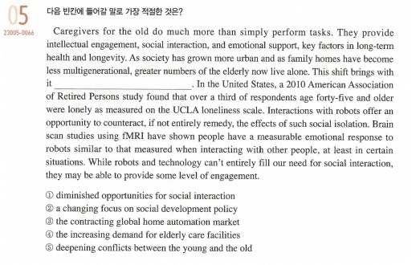

AI가 가져올 이점들
1. 인간이 어려워하거나 귀찮아하는 육체적인 노동을 대신해준다
어째 보면 양날의 검일 수도 있는 장점이다.
단순 노동 즉 1,2차 산업을 대체 함으로써 인간의 육
체적 노동을 줄여줄 것이다.
이로 인해 인간은 더 많은 자유시간을 가질 수 있을 것이다.
2. 인간을 대신하여 독거노인들과 소통하여 외로움을 덜어준다

수능 특강에 실린 문제에도 나오듯 인공지능의 발전이 노인들의 외로움을 덜어줄 수 있다.
3. 인간의 감정 등 때문에 발생하는 문제를 방지 할 수 있다 (예를 들면 재판)
인간이 재판 등의 과정에서 뇌물 등에 의해 혹은 아는 지인이기 때문에 일명 솜방망이 처벌이 이인간이 재판 등의 과정에서 뇌물 등에 의해 혹은 아는 지인이기 때문에 일명 솜방망이 처벌이 이
루어지는 경우가 꽤나 있다. 하지만 만약 인공지능이 발달하여 판사의 역할을 담당하게 된다면
아마도 사적인 감정 혹은 물질적 유혹 때문에 죄가 미화되는 일 없이 ‘법대로’ 형이 집행 가능해
져 사회의 정의가 살아 날 수 있을 것이다.